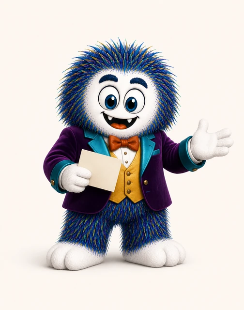
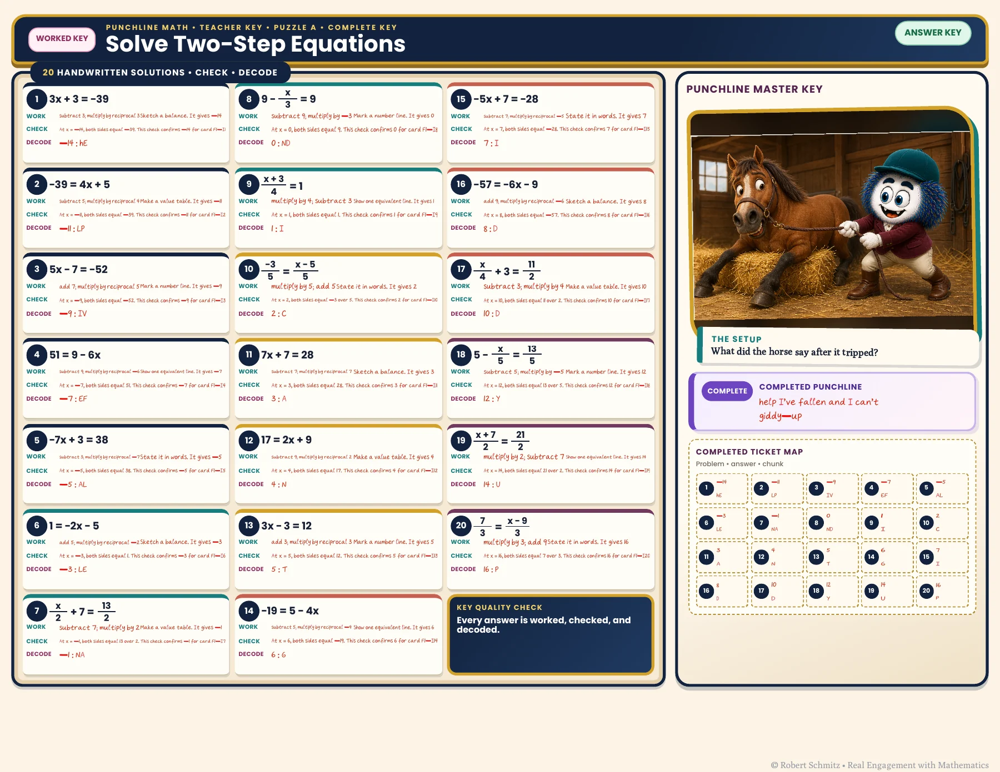

{kind=link}
Make each answer contribute
The decoder connects individual problems to a shared reveal. It gives the practice sequence a destination that learners can see taking shape.
Puzzle practice · Worked teacher support
Punchline Math Solving two-step equations
Solve, decode, reveal: a small piece of the punchline rewards each completed problem.
Explore the actual materials ↓
Solve. Decode. Reveal.
The learner experience
A two-step-equation activity links solutions to letter chunks in a decoder. Learners work through the mathematics and assemble the chunks to uncover the punchline. The teacher edition pairs the same problems with worked support.
Undo operations and record the mathematical steps.
Match the solution to its letter chunk in the decoder.
Assemble the punchline, then use the worked key to inspect the reasoning.
Inside the resource
Selected pages from the actual resource files. Open any page to inspect the details.

Final student resource, Puzzle A. The equation workspace, decoder, and punchline board share one page.

Final teacher key, Puzzle A. Worked solutions and the completed decoder support review of the same tasks.
Why I designed it this way
The decoder connects individual problems to a shared reveal. It gives the practice sequence a destination that learners can see taking shape.
The teacher edition keeps worked solutions beside the original prompts. A decoded joke can suggest where to recheck, but the mathematical work is the evidence of understanding.
Evidence & next evaluation
These authored materials show the activity structure and design decisions. Learner outcomes have not yet been measured for this case study.
Check whether learners verify their equations when a chunk does not fit, then compare performance on an undecoded two-step problem.